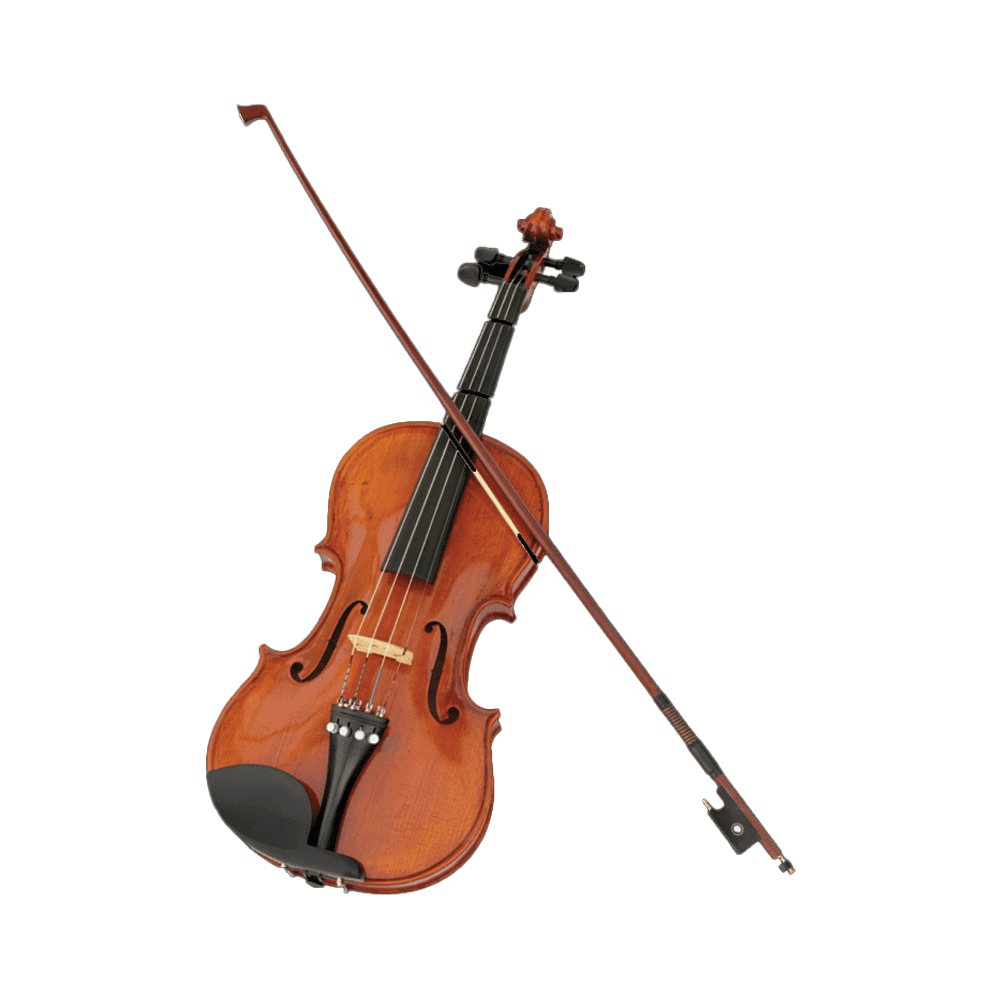
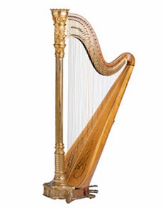
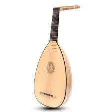
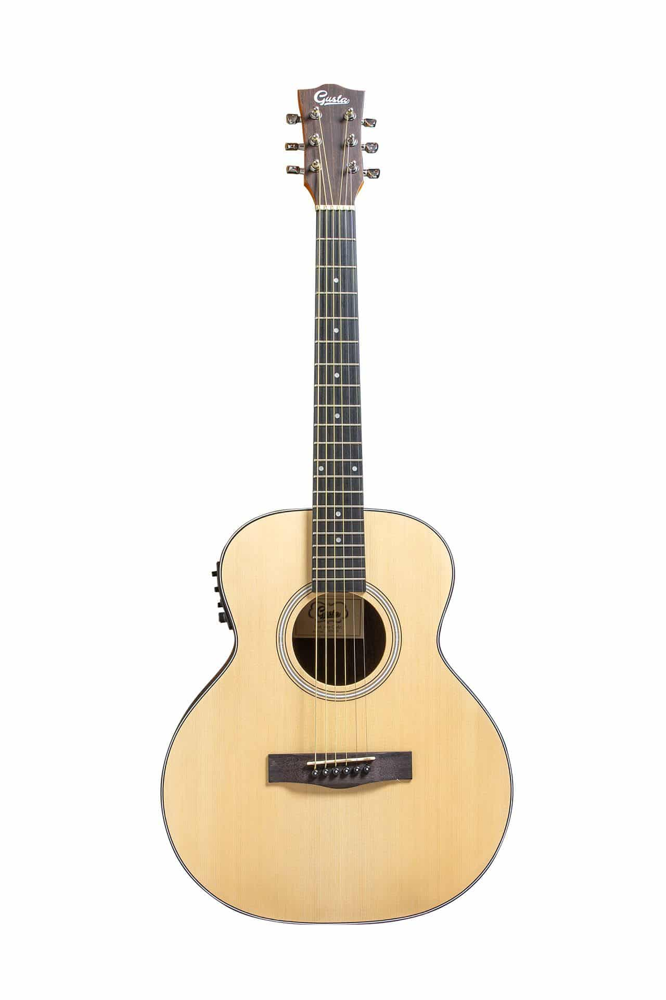
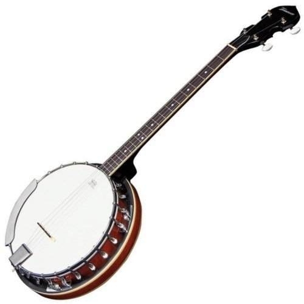

วิธีเล่นดนตรีสากล

วิธีเล่นดนตรีสากล
กลุ่มเครื่องสาย (String Instruments)
เป็นเครื่องดนตรีที่ทำให้เกิดเสียงโดยการสั่นสะเทือนของสายลวด เชือก เอ็น หรือไนลอน
และมีตัวกำธรเสียง ทำหน้าที่ขยายเสียงให้ดังมากขึ้น คุณภาพของเสียงขึ้นอยู่กับรูปร่าง และวัตถุที่ใช้
ทำ การสั่นสะเทือนของสายอาจทำได้โดยการสี หรือ ดีดโดยอาจกระทำโดยตรง หรือเพิ่มกลไกให้ยุ่ง
ยากขึ้น เครื่องสายที่พบเห็นในปัจจุบัน นิยมใช้วิธีทำให้เกิดเสียงได้ 2 วิธี คือ วิธีสี และวิธีดีด
1.1 เครื่องสายประเภทใช้คันสี ในกลุ่มนี้ประกอบด้วย
 1 ไวโอลิน (Violin) ไวโอลินคันหนึ่ง ๆ ประกอบด้วยแผ่นไม้หลายชิ้น แต่ละชิ้นเลือก มาจากไม้ชนิดต่าง ๆ กันตามความเหมาะสมที่จะนำมาทำเป็นส่วนต่าง ๆ ของซอ ด้านหน้าใช้ไม้พรุช ซึ่งเป็นไม้เนื้ออ่อนมีลายละเอียดด้านหลังใช้ไม้เมเปิ้ล ไวโอลินประกอบด้วยสาย 4 สาย แต่ละสายเทียบเสียงห่างกันคู่ 5 เพอร์เฟค คือ เสียง G-D-A-E สายต่ำสุดเทียบเสียง G ต่ำถัดจาก Middle C สายทั้งสี่มีความยาวเท่ากัน แต่ระดับเสียง แตกต่างกันตามขนาดไวโอลินขนาดมาตรฐานจะมีความยาวทั้งสิ้น 23.5 นิ้ว คันชักยาว 29 นิ้ว ไวโอลินเป็นเครื่องดนตรีที่ใช้เล่นท่วงทำนอง (Melodic Instrument) มีเสียงแหลมสดใส ถ่ายทอดอารมณ์ได้ดีถ้าต้องการจะเล่นให้เสียงหวาน เศร้า ก็ทำได้ โดยใช้เทคนิคการเล่นแบบต่าง ๆ
 2 วิโอลา (Viola) มีรูปร่างเหมือนไวโอลินทุกประการ แต่มีขนาดใหญ่กว่าไวโอลิน
ประมาณหนึ่งในห้า มีความยาวทั้งสิ้น 26.5 นิ้ว วิโอลาประกอบด้วยสาย 4 สาย ตั้งเสียงต่ำกว่า
ไวโอลินลงไปอีกคู่ 5 เพอร์เฟค คือ C-G-D-A มีเสียงทุ้มและนุ่มนวลกว่าไวโอลิน แต่ไม่มีบทบาทเด่น
เหมือนไวโอลิน
การเล่นเครื่องดนตรีไวโอลินและวิโอลานี้ผู้เล่นจะใช้มือซ้ายจับที่คอของเครื่อง โดยให้คอของ
เครื่องอยู่ในร่องระหว่างหัวแม่มือกับนิ้วชี้ นิ้วทั้งสี่ (ยกเว้นหัวแม่มือ) ทำหน้าที่กดลงบนสายเพื่อเปลี่ยน
ระดับเสียง ด้านท้ายของเครื่องวางบนไหล่ซ้ายของผู้เล่น และผู้เล่นจะใช้คางหนีบกระชับ จับตัวเครื่อง
ด้วยมือซ้ายและใช้มือขวาจับคันชักในการสี
เครื่องอยู่ในร่องระหว่างหัวแม่มือกับนิ้วชี้ นิ้วทั้งสี่ (ยกเว้นหัวแม่มือ) ทำหน้าที่กดลงบนสายเพื่อเปลี่ยน
ระดับเสียง ด้านท้ายของเครื่องวางบนไหล่ซ้ายของผู้เล่น และผู้เล่นจะใช้คางหนีบกระชับ จับตัวเครื่อง
ด้วยมือซ้ายและใช้มือขวาจับคันชักในการสี
2 วิโอลา (Viola) มีรูปร่างเหมือนไวโอลินทุกประการ แต่มีขนาดใหญ่กว่าไวโอลิน
ประมาณหนึ่งในห้า มีความยาวทั้งสิ้น 26.5 นิ้ว วิโอลาประกอบด้วยสาย 4 สาย ตั้งเสียงต่ำกว่า
ไวโอลินลงไปอีกคู่ 5 เพอร์เฟค คือ C-G-D-A มีเสียงทุ้มและนุ่มนวลกว่าไวโอลิน แต่ไม่มีบทบาทเด่น
เหมือนไวโอลิน
การเล่นเครื่องดนตรีไวโอลินและวิโอลานี้ผู้เล่นจะใช้มือซ้ายจับที่คอของเครื่อง โดยให้คอของ
เครื่องอยู่ในร่องระหว่างหัวแม่มือกับนิ้วชี้ นิ้วทั้งสี่ (ยกเว้นหัวแม่มือ) ทำหน้าที่กดลงบนสายเพื่อเปลี่ยน
ระดับเสียง ด้านท้ายของเครื่องวางบนไหล่ซ้ายของผู้เล่น และผู้เล่นจะใช้คางหนีบกระชับ จับตัวเครื่อง
ด้วยมือซ้ายและใช้มือขวาจับคันชักในการสี
เครื่องอยู่ในร่องระหว่างหัวแม่มือกับนิ้วชี้ นิ้วทั้งสี่ (ยกเว้นหัวแม่มือ) ทำหน้าที่กดลงบนสายเพื่อเปลี่ยน
ระดับเสียง ด้านท้ายของเครื่องวางบนไหล่ซ้ายของผู้เล่น และผู้เล่นจะใช้คางหนีบกระชับ จับตัวเครื่อง
ด้วยมือซ้ายและใช้มือขวาจับคันชักในการสี 3 เชลโล (Cello) มีรูปร่างเหมือนไวโอลินและวิโอลา แต่มีขนาดโตกว่ามาก คือความ
ยาวประมาณ 48.5 นิ้ว ขณะเล่นต้องนั่งเก้าอี้ เอาเครื่องไว้ระหว่างขาทั้งสองข้างหันหน้าเครื่องออก
เทคนิคการเล่นเหมือนกับไวโอลินสายทั้งสี่เสียงต่ำกว่าวิโอลา 1 ช่วงคู่ 8 คือ C-G-D-A เสียงของเชลโล
นุ่มนวล แสดงอารมณ์เศร้าสร้อย
3 เชลโล (Cello) มีรูปร่างเหมือนไวโอลินและวิโอลา แต่มีขนาดโตกว่ามาก คือความ
ยาวประมาณ 48.5 นิ้ว ขณะเล่นต้องนั่งเก้าอี้ เอาเครื่องไว้ระหว่างขาทั้งสองข้างหันหน้าเครื่องออก
เทคนิคการเล่นเหมือนกับไวโอลินสายทั้งสี่เสียงต่ำกว่าวิโอลา 1 ช่วงคู่ 8 คือ C-G-D-A เสียงของเชลโล
นุ่มนวล แสดงอารมณ์เศร้าสร้อย 4 ดับเบิลเบส (Double Bass) เป็นเครื่องที่มีขนาดใหญ่ที่สุดในตระกูลไวโอลิน มี
ความยาวประมาณ 74 นิ้ว ผู้บรรเลงต้องยืนเล่น เสียงของดับเบิลเบส ต่ำสุดแสดงถึงความมีอำนาจ
ความกลัว ความลึกลับ สายทั้งสี่ตั้งเสียงห่างกันเป็นคู่ 4 เพอร์เฟค คือ E- A- D- G
4 ดับเบิลเบส (Double Bass) เป็นเครื่องที่มีขนาดใหญ่ที่สุดในตระกูลไวโอลิน มี
ความยาวประมาณ 74 นิ้ว ผู้บรรเลงต้องยืนเล่น เสียงของดับเบิลเบส ต่ำสุดแสดงถึงความมีอำนาจ
ความกลัว ความลึกลับ สายทั้งสี่ตั้งเสียงห่างกันเป็นคู่ 4 เพอร์เฟค คือ E- A- D- G 1.2 เครื่องสายประเภทเครื่องดีด (Plucked String) ในกลุ่มนี้ประกอบด้วย
 1 ฮาร์พ (Harp) ฮาร์พเป็นพิณโบราณขนาดใหญ่ มีประวัติเก่าแก่มาก ชาวอียิปต์ โบราณใช้ฮาร์พเป็นเครื่องดนตรีสำคัญในราชสำนักของฟาโรห์ ในยุโรปสมัยกลางฮาร์พเป็นเครื่องดนตรี ที่ได้รับความนิยมจากชาวไอริช และเวลส์ เป็นอย่างมาก ฮาร์พมีลักษณะเป็นโครงสามเหลี่ยมขนาดใหญ่ ด้านบนโค้งงอสวยงาม มีสายขึงอยู่ทั้งหมด 47 สาย ช่วงเสียงกว้าง 6 ? Octaves บันไดเสียงพื้นฐานของฮาร์พเป็น Cb Major ที่ฐานของฮาร์พ จะ มีกระเดื่อง 7 อัน สำหรับเหยียบ (ประจำทั้ง 7 เสียง) ถ้าเหยียบจมลงครั้งหนึ่งสายจะดึงขึ้นทำให้เสียงสูง ขึ้นครึ่งเสียง ถ้าเหยียบอีกเป็นครั้งที่สองสายจะตึงขึ้นอีกทำให้เสียงสูงขึ้นอีกทำให้ผู้เล่น เล่นเพลงได้ทุก บันไดเสียงในการบรรเลงฮาร์พผู้เล่นจะต้องนั่งลงให้ไหล่ขวาชิดกับตัวฮาร์พใช้นิ้วมือทั้งสอง ยกเว้นนิ้ว ก้อยดีดสาย เสียงของฮาร์พเบาและนุ่มนวลกว่าเปียโนมากปัจจุบันฮาร์พใช้บรรเลงในวงดนตรีประเภท ออร์เคสตราเท่านั้น
 2 ลูท (Lute) เป็นพิณชนิดหนึ่งที่เป็นต้นกำเนิดของเครื่องสายประเภทดีด ลูทมีรูปทรง เหมือนผลส้มผ่าซีก มีสะพานวางนิ้วที่มีช่องปรากฏอยู่ เช่นเดียวกับกีตาร์ แบนโจ แมนโดลิน ฯลฯ ชาวอาหรับโบราณนิยมกันมากแต่ปัจจุบันนี้ไม่ได้รับความนิยม
 3 กีตาร์ (Guitar) กีตาร์เป็นเครื่องดนตรีที่แพร่หลายมากในปัจจุบันมีรูปร่างคล้ายคลึงกับ พิณลูทแต่ผิดกันตรงที่รูปร่างแบนกว่าในปัจจุบันมีความสำคัญทั้งในวงดนตรีประเภทสตริง แจ๊สร็อค เป็นต้น กีตาร์ประกอบด้วยสาย 6 สาย โดยตั้งระดับเสียงต่ำไปหาสูง ในแต่ละสายดังนี้ E,A,D,G,B,E ไม่ว่าจะเป็นกีตาร์โปร่งธรรมดา หรือกีตาร์ไฟฟ้า นอกจากนี้เครื่องสายประเภทดีดยังมีแมนโดลิน แบนโจ ซึ่งเป็นเครื่องสายประเภทดีดที่มีรูป ร่างคล้ายกีตาร์ แต่มิได้นำมาใช้ในวงดนตรีมากนักส่วนมากใช้ในดนตรีของชาวพื้นเมืองแถบลาติน อเมริกาอย่างไรก็ตามทั้งแมนโดลิน และแบนโจก็เป็นผลการวิวัฒนาการของลูทนั่นเอง
 4 แมนโดลิน (Mandolin) เป็นเครื่องดนตรีตระกูลลูท มีสาย 4 คู่ (8สาย) หรือ 6 คู่
(12สาย) ตั้งเสียงเท่ากันเป็นคู่ มีลูกบิดคล้ายกีตาร์ใช้ในการตั้งเสียง และมีนม (Feat) รองรับสาย เวลา
เล่นจะใช้นิ้วมือซ้ายจับตัวแมนโดลินและใช้มือขวาดีด ลักษณะการดีดคล้ายการดีดกีตาร์โดยใช้ปิ๊ค
(Pick) เสียงที่เกิดจากแมนโดลินมีความไพเราะเป็นเสียงที่มีคุณภาพ เร้าอารมณ์ได้ดีโดยเฉพาะอารมณ์
โศกเศร้าเกี่ยวกับความรัก แมนโดลินมีถิ่นกำเนิดที่ประเทศอิตาลี เป็นเครื่องดนตรีที่ชาวอิตาเลียนนิยม
กันแพร่หลาย ในปี ค.ศ. 1713 ได้มีผู้นำเอาแมนโดลินมาเล่นผสมในวงคอนเสิร์ตในประเทศอังกฤษ
4 แมนโดลิน (Mandolin) เป็นเครื่องดนตรีตระกูลลูท มีสาย 4 คู่ (8สาย) หรือ 6 คู่
(12สาย) ตั้งเสียงเท่ากันเป็นคู่ มีลูกบิดคล้ายกีตาร์ใช้ในการตั้งเสียง และมีนม (Feat) รองรับสาย เวลา
เล่นจะใช้นิ้วมือซ้ายจับตัวแมนโดลินและใช้มือขวาดีด ลักษณะการดีดคล้ายการดีดกีตาร์โดยใช้ปิ๊ค
(Pick) เสียงที่เกิดจากแมนโดลินมีความไพเราะเป็นเสียงที่มีคุณภาพ เร้าอารมณ์ได้ดีโดยเฉพาะอารมณ์
โศกเศร้าเกี่ยวกับความรัก แมนโดลินมีถิ่นกำเนิดที่ประเทศอิตาลี เป็นเครื่องดนตรีที่ชาวอิตาเลียนนิยม
กันแพร่หลาย ในปี ค.ศ. 1713 ได้มีผู้นำเอาแมนโดลินมาเล่นผสมในวงคอนเสิร์ตในประเทศอังกฤษ 5 แบนโจ (Banjo) เป็นเครื่องดนตรีในตระกูลลูท จุดเริ่มต้นที่มีผู้นำมาเล่นอยู่ในแถบ แอฟริกาตะวันตก (Western Africa) เป็นเครื่องดนตรีพื้นบ้านของพวกนิโกร ต่อมาจึงเป็นที่แพร่หลาย ในหมู่อเมริกันนิโกร วิธีการเล่นคล้ายกับกีตาร์
2.กลุ่มเครื่องลมไม้ (Woodwind Instruments)
เครื่องดนตรีประเภทเครื่องลมไม้ (Woodwind Instruments) ในปัจจุบันมีเครื่องดนตรีหลายเครื่องที่ไม่ได้ทำด้วยไม้เนื่องจากไม้หายาก จึงใช้วัสดุอย่างอื่น สร้างขึ้นแต่วิธีการเกิดเสียงและคุณภาพเสียงก็ยังเหมือนกับทำด้วยไม้ทุกประการเครื่องดนตรีกลุ่มเครื่อง ลมไม้ยังแบ่งได้อย่างกว้าง ๆ เป็น 2 ประเภทคือประเภทเป่าลมเข้าไปในรูเป่า(Blowing into a tube) ลำตัวมีลักษณะเป็นท่อเครื่องเป่าประเภทนี้เป่าลมเข้าทางด้านข้าง และประเภทเป่าลมให้ผ่านลิ้นของ เครื่องดนตรี (Blowing through a reed)เครื่องลมไม้ประเภทขลุ่ย ยังแบ่งตามลักษณะของการเป่าได้ 2 ประเภทคือ ประเภทเป่าตรงปลาย เช่น ขลุ่ยเรคคอร์เดอร์ ประเภทเป่าด้านข้าง เช่น ฟลูต และปิคโคโล 1 ฟลูต (Flute) เป็นเครื่องดนตรีที่เก่าแก่ที่สุดชนิดหนึ่งที่มีพัฒนาการมาจากมนุษย์ก่อน
ประวัติศาสตร์ที่คิดใช้กระดูกสัตว์หรือเขาของสัตว์ที่เป็นท่อกลวงหรือไม่ก็ใช้ปล้องไม้ไผ่มาเจาะรูแล้วเป่า
ให้เกิดเสียงต่าง ๆ วัตถุนั้นจึงเป็นต้นกำเนิดของเครื่องดนตรีประเภทขลุ่ย ฟลูตเป็นขลุ่ยเป่าด้านข้าง
มีความยาว 26 ?นิ้วมีช่วงเสียงตั้งแต่ C กลางจนถึง C สูงขึ้นไปอีก 3 ออคเทฟ เสียงแจ่มใสจึงเหมาะ
สำหรับเป็นเครื่องดนตรีประเภทเล่นทำนองใช้เลียนเสียงนกเล็ก ๆ ได้ดีและเสียงต่ำของฟลูตจะให้เสียงที่
นุ่มนวล
1 ฟลูต (Flute) เป็นเครื่องดนตรีที่เก่าแก่ที่สุดชนิดหนึ่งที่มีพัฒนาการมาจากมนุษย์ก่อน
ประวัติศาสตร์ที่คิดใช้กระดูกสัตว์หรือเขาของสัตว์ที่เป็นท่อกลวงหรือไม่ก็ใช้ปล้องไม้ไผ่มาเจาะรูแล้วเป่า
ให้เกิดเสียงต่าง ๆ วัตถุนั้นจึงเป็นต้นกำเนิดของเครื่องดนตรีประเภทขลุ่ย ฟลูตเป็นขลุ่ยเป่าด้านข้าง
มีความยาว 26 ?นิ้วมีช่วงเสียงตั้งแต่ C กลางจนถึง C สูงขึ้นไปอีก 3 ออคเทฟ เสียงแจ่มใสจึงเหมาะ
สำหรับเป็นเครื่องดนตรีประเภทเล่นทำนองใช้เลียนเสียงนกเล็ก ๆ ได้ดีและเสียงต่ำของฟลูตจะให้เสียงที่
นุ่มนวล